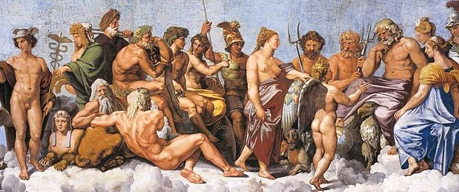

La mitología es un conjunto de mitos relativamente cohesionados o paralelamente adheridos: relatos que forman parte de una determinada religión o cultura. También se les denomina mitos a los discursos, narraciones o expresiones culturales de origen sagrado, y que posteriormente fueron secularizados y tratados como discursos relativos a una cultura, a una época o a una serie de creencias de carácter imaginario.
Los mitos son relatos basados en la tradición y en la leyenda, creados para explicar el universo, el origen del mundo, los fenómenos naturales y así como también para cualquier suceso para el cual no haya una explicación conocida. Sin embargo, no todos los mitos tienen por qué tener este propósito explicativo. Igualmente, la mayoría de los mitos están relacionados con una fuerza natural o deidad, pero muchos son simplemente historias y leyendas que se han ido transmitiendo oralmente de generación en generación.
La palabra mitología proviene del latín mythologĭa, y a su vez del griego μυθολογία (mythología), que significa relación de mitos o fábulas.
